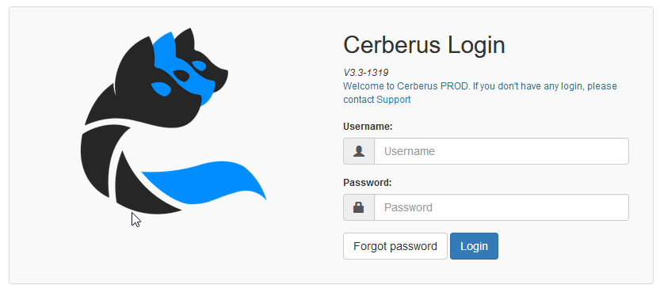
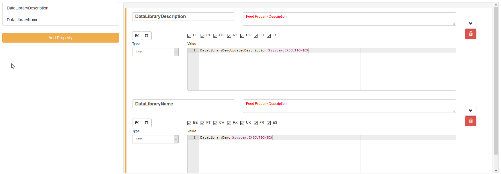
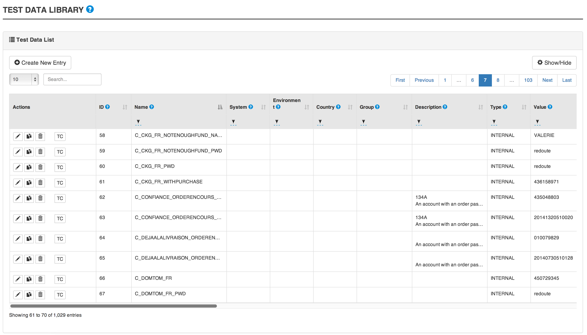
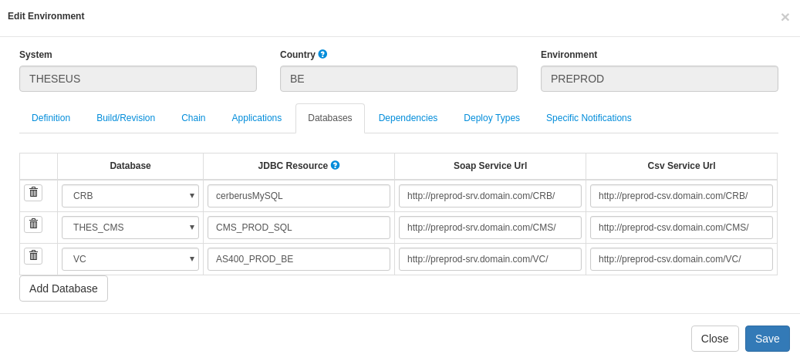
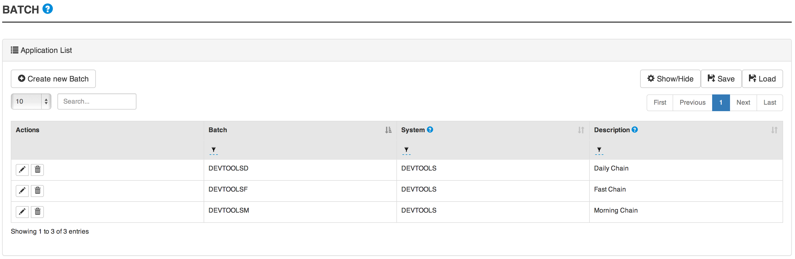
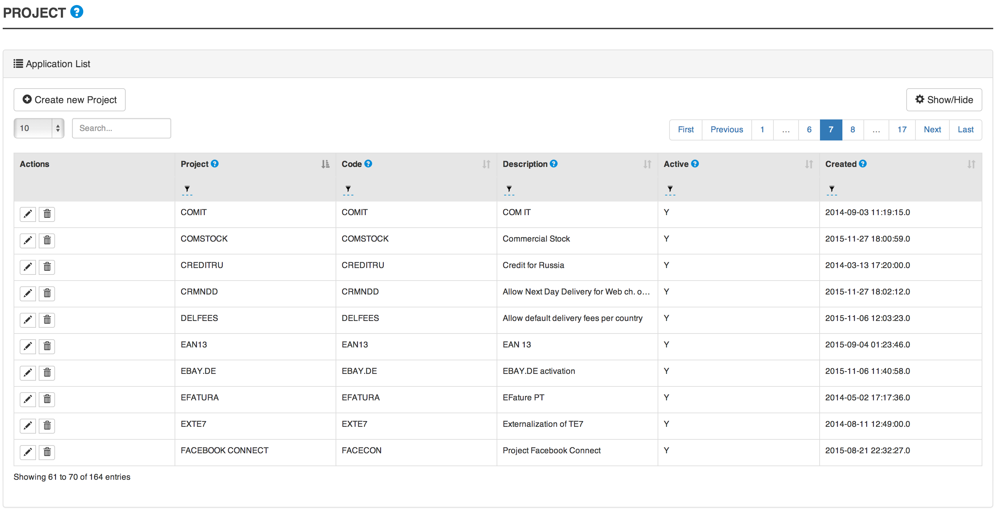
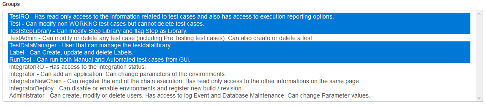
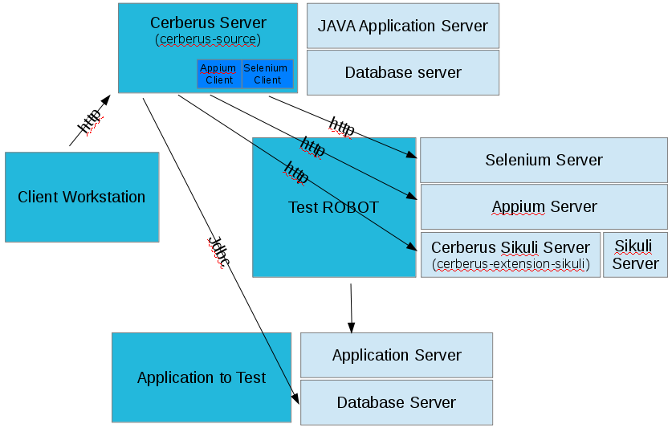
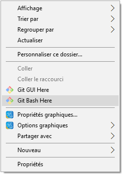

|
Note
|
This document is under active development!
If you find errors or missing information in this document, please don’t hesitate to submit an issue or open a pull request with a fix. We encourage you to submit questions and discuss any aspects of the project on github. We are happy to welcome new contributors! |
Introduction to Cerberus
In this section, you will find information on Cerberus.
 Something is incorrect/missing in this section? Feel free to submit modification.
Something is incorrect/missing in this section? Feel free to submit modification.
1. What is Cerberus?
Cerberus is a webapplication, open source, test repository, user friendly, can interface with robot in multiple technologies.
 Something is incorrect/missing in this section? Feel free to submit modification.
Something is incorrect/missing in this section? Feel free to submit modification.
Getting started
In this section, you will find information on how is organized the Cerberus application.
We assume that you already configured your application, as described in the Application configuration section.
 Something is incorrect/missing in this section? Feel free to submit modification.
Something is incorrect/missing in this section? Feel free to submit modification.
2. Welcome to Cerberus application
2.1. Login
Opening Cerberus, you will be invited to login with the information you should have received from your Cerberus administrator.

|
Note
|
If you did not receive any credential, please contact your Cerberus administrator. |
|
Note
|
If you forgot your password, you can retrieve it following the forgot password wizard. |
Once you’re logged in, you will access to the homepage.
2.2. Homepage
- The homepage is showing information on
-
-
testcases set by application grouped by status (See the [workflow] section for more information);
-
testcase executions by tag (the last ones by default, or customizable as described in the Customization section);
-
the application versions deployed on environment;
-

2.2.1. Customization
You can customize the list of tag in a static way by selecting the tags from the combo.
But you can also define a search text that will be used to dynamicaly retreive the list of tag.

NB : If the list of tag is defined, the search Text will be ignored.
2.3. First steps
2.3.1. Glossary
You will find below definitions of Cerberus common terms.
-
Application : Technical component
-
Battery : Group of TestCase to be executed together. This feature should be replaced by labels soon.
-
Campaign : One or several batteries with execution parameters (country - environment - browser). Can also be created with labels instead of batteries.
-
TestCase : Test scénario made of steps, actions and controls. (User story)
-
Label : Mark to describe TestCases, so you can group and filter easily.
-
System : Business Application ou CI
-
Test : Group of TestCases, Test is also considered as an application function. Executions can be sorted by Test.
2.3.2. Représentation
You will find in this section a grphical representation of the main Cerberus elements.
Below the system :

Below the test case :

2.3.3. Tutorials
First steps as an administrator
|
Note
|
For non-admin users, please go to the next section : "First steps" |
You will find below setting steps for an application to test.
-
Create a system. More information here Invariants
|
Note
|
Check you are on the system you have just created (dropdown menu at top right) 
|
-
Create an environment. Example : PROD FR (see Environment)
-
Create an application. Example : Google (see [Application])
-
Edit once again your application, you can now set new parameters. In tab environment, create PROD FR environment and fill http://www.google.fr in host section.
Technical settings are now finished. Please refer to the following section to implement a TestCase.
First steps
|
Note
|
Please verify with your administrator if system and application are already created. |
You will find below step to create and execute a TestCase.
-
Create a Test. Example : « Search Engine » (see Create test)
-
Access to TestCase list and create a TestCase (cf Create TestCase). Mandatory fields : Test / Application / TestCase ID (Should already be filled with a reference)
|
Note
|
Activation criteria tab : Activate for PROD your TestCase. (default setting not active for PROD) For the example, We will run our TestCase on PROD environment |
-
Your TestCase is now created, find it in the list using filters.
-
Edit it (cf Implement TestCase)
-
Create your first step « Open Google »
-
Add your first action : OpenURL value = www.google.com or OpenURLWithBase value = / (if URL is already defined in application settings)
-
You can add a control : VerifyTitle Title = Google
-
Save the script and click on Run button.
-
You are now on execution page. Select country / environment
-
Fill robot information. Mandatory fields : IP / port / browser.
|
Note
|
You must first run your selenium server (see Selenium) |
|
Tip
|
To see execution step by step parameter Synchroneous to N. |
-
Click on the execution button.
Congratulations, you’ve just executed your first Cerberus TestCase !
 Something is incorrect/missing in this section? Feel free to submit modification.
Something is incorrect/missing in this section? Feel free to submit modification.
3. Overview
In this section, you will find general information on Cerberus. How it is organized, How the tables are Customizable…etc.
 Something is incorrect/missing in this section? Feel free to submit modification.
Something is incorrect/missing in this section? Feel free to submit modification.
Test Management
In this section, you will find information on test management in Cerberus.
 Something is incorrect/missing in this section? Feel free to submit modification.
Something is incorrect/missing in this section? Feel free to submit modification.
4. Test
In this section, you will find information on Test in Cerberus.
Test description…

4.1. Test attributes
Field |
Description |
Test |
Test name. |
Description |
Description of the test. |
Active |
Define if the test is active. |
Automated |
Define if the test contains automated testcase. |
4.2. Create test
-
Go to Test → Test.
-
Click on Create Test.
-
Feed the Test field with the test name.
-
Feed the Description field with a short description of this test.
-
Select the activation information in the Active field.
-
Select the automation information in the Automated field.
-
Click on Save.
-
 Something is incorrect/missing in this section? Feel free to submit modification.
Something is incorrect/missing in this section? Feel free to submit modification.
5. TestCase
In this section, you will find information on TestCase in Cerberus.
5.1. TestCase List

5.2. Shortcut
5.2.1. Edit TestCase

5.2.2. Delete TestCase

5.2.3. Run TestCase

5.2.4. Duplicate TestCase

5.3. TestCase attributes
Field |
Description |
Test |
Test name on which testcase is linked. |
Testcase |
An ID. |
Description |
Define if the test is active. |
Application |
The application for which the testcase is defined. |
5.4. Create TestCase
-
Go to TestCase → TestCase List.

-
Click on Create TestCase.
-
Feed the Test field with the test name.
-
Feed the Description field with a short description of this test.
-
Continue to describe.
-
Click on Save.
-
5.5. Implement TestCase
5.5.1. Step
-
Click on Add step to display the following window.

-
Feed a Description and click on Add for a new step.
-
Or search for a step in library then click on Add.

Your step is created. if you want to put it in library, just click on the book on the right side. A step in library will be available to add it in all test cases of your current system.

In the following screenshot you can see a use step. This step is imported from the previous library step. You are not able to modify it (all fields are grey). But you can find a link at the top to open the library if you want to modify your step. All use steps from this library will be impacted by your modification.
To modify only this use step, you have to click on the padlock icon but it will not be a use step anymore. (modification on library step will not affect it)
|
Note
|
You have the possibility to switch the position of your steps by clicking on the 3 dots. |

5.5.2. Action
Action |
Description |
Example |
Unknown |
Unknown action. Default Action when creating a new action |
|
keypress |
will allow you to press any key in the current web page. Value1 : Location of the element from which press the key. Value2 : Keycode of the key to press Example : ENTER |
|
hidekeyboard |
Hide the currently visible keyboard |
|
swipe |
TBD |
|
click |
will allow you to click on an element inside the current page. Value1 Identifier and name of the element to click in the form of : identifier=html_reference. Example : id=html_reference |
|
mouseButtonLeftPress |
TBD |
|
mouseButtonLeftRelease |
TBD |
|
doubleClick |
will allow you to double click on an element inside the current page. Value1 Identifier and name of the element to click in the form of : identifier=html_reference. Example : id=html_reference |
|
rightClick |
will allow you to right click on an element inside the current page. Value1 Identifier and name of the element to click in the form of : identifier=html_reference. Example : id=html_reference |
|
focustoIframe |
TBD |
|
focustoDefaultIframe |
TBD |
|
switchToWindow |
When the Test case need to switch to another window (like popup dialog) this action is used. Just specify the title or the URL of the other window to switch to this window. |
title=titleOfThisNewWindow or url=http://url_of_this_new_window |
manageDialog |
TBD |
|
mouseOver |
Mouse cursor over an object Element path : the id of the element |
|
OpenUrlWithBase |
TBD |
|
OpenUrlLogin |
TBD |
|
OpenUrl |
TBD |
|
select |
TBD |
|
type |
Write a data in a field. Element path : the id of the field Property Name : the property containing the value to type (can be a property or text. |
|
wait |
Wait for a certain amount of time Feed a number (ms) or wait for element present feed an element (xpath) |
|
CallSoapWithBase |
TBD |
|
CallSoap |
To call a SOAP. Feed one the following field Soap Name (library) : Name of the SOAP stored in library Property Name : Name of the property if the SOAP is defined in property |
|
removeDifference |
TBD |
|
executeSqlUpdate |
will allow you to execute SQL update (insert,delete,update). Feed the Database Name and the Script to execute. Database has to be declared to your system and environment. |
|
executeSqlStoredProcedure |
will allow you to execute SQL stored procedure. Feed the Database Name and the Stored Procedure to execute. Database has to be declared to your system and environment. |
|
CalculateProperty |
will allow you to calculate a Property defined in the property section of the test case. [Optional] Feed Value2 with another property to affect to the previous Property Name a new value. Useful to override the one defined from the property section during an execution. |
|
doNothing |
Just perform no action. No action will be executed and engine will go to the next action or control |
|
skipAction |
Skip this action. No action will be executed and engine will go to the next action. Controls associated to this action will be skipped too. |
5.5.3. Control
Control |
Description |
Example |
Unknown |
Default control when creating a new control |
|
getPageSource |
TBD |
|
skipControl |
Skip the control. |
|
takeScreenshot |
Take a screenshot |
|
verifyElementClickable |
OK if Element is clickable. |
|
verifyElementDifferent |
TBD |
|
verifyElementinElement |
TBD |
|
verifyElementEquals |
TBD |
|
verifyElementNotClickable |
TBD |
|
verifyElementNotPresent |
TBD |
|
verifyElementNotVisible |
TBD |
|
verifyElementPresent |
OK if Element is found on the current page. |
|
verifyElementVisible |
OK if Element is visible on the current page. |
|
verifyElementDifferent |
TBD |
|
verifyIntegerEquals |
OK if the Integer1 is equal to the Integer2. |
|
verifyIntegerGreater |
OK if the Integer1 is greater than the Integer2. |
|
verifyIntegerMinor |
OK if the Integer1 is lower than the Integer2. |
|
verifyRegexInElement |
TBD |
|
verifyStringContains |
OK if Property String1 contains the String2. |
|
verifyStringEqual |
OK if the String1 is equal to the String2. |
|
verifyStringGreater |
OK if the String1 is greater than to the String2 (After in a dictonnary) |
String1 : ZZZ String2 : AAA |
verifyStringMinor |
OK if the String1 is minor than to the String2 (before in a dictonnary) |
String1 : AAA String2 : ZZZ |
verifyTextInDialog |
TBD |
|
verifyTextInElement |
OK if the text found in Element is equal to the Text indicated |
Element : //StatusCode Text : OK |
verifyTextInPage |
TBD |
|
verifyTextNotInElement |
OK if the text found in Element is not equal to the Text indicated |
Element : //StatusCode Text : KO |
verifyTextNotInPage |
TBD |
|
verifyTitle |
TBD |
|
verifyUrl |
OK if the URL of the current page equal to the URL indicated . |
|
verifyXmlTreeStructure |
TBD |
5.5.4. Property
When Clicking on Button  , the Window "Manage Properties" will open.
From there you can :
, the Window "Manage Properties" will open.
From there you can :
-
either manage your TestCase properties
-
or see your inherited properties - coming from the step libraries of your use steps.

Field |
Description |
Property |
Name of the property. |
Type |
The way the property is going to be calculated. |
Value |
Value of the property. |
DB |
DataBase in which the property will "executeSql". |
Length |
When calculating a list of values, defines the number of rows the property will return. |
Row Limit |
When returning a list of values, limits the number of rows the property will consider for random purposes. |
Nature |
Defines the unique value that will be used in the execution. By default, STATIC has no rules defined : it will take the first result it finds. |
Desription |
Description of the property. |
Countries |
Countries for which the property will be calculated (environment parameter). |
5.5.5. Variables
You can use variables in many area of Cerberus. Those variable are used in order to perform some actions of controls in a dynamic way. 3 types of variables can be created :
-
Variables defined from properties inside Test Cases.
-
Variables defined from application object.
-
System Variables
Properties and Application Object are defined by the users while system variable are provided by Cerberus.
The global syntax of a variable is : %[property|object|system].nameOfTheVariable%
This is the list of fields in Cerberus where you can use those variables.
-
Condition Value1 and Value2 at Test Case level.
-
Condition Value1 and Value2 at Step Test Case level.
-
Condition Value1 and Value2 at Action Test Case level.
-
Condition Value1 and Value2 at Control Test Case level.
-
Test Case Action Value 1 and Value 2.
-
Test Case Control Value 1 and Value 2.
-
Test Case Properties Value 1 and Value 2.
-
Path, Envelope and Method at Test Data Library (SOAP) level.
-
SQL Script at Test Data Library (SQL) level
-
Column, Parsing Answer and Column Position at Test Data Library Subdata definition level
-
Path, Request, Operation and Attachement URL at Service level.
-
Request detail (all keys and values) and Header (all keys and values) at Service level.
When a variable is detected in one of those field, Cerberus will replace it by the value during the execution.
-
If the variable is an object, the value (that never change) is just replaced.
-
If the variable is a system variable, the value is calculated and replaced at the same time (for ex : time will be the time of the replacement).
-
If the variable is a property, it gets automatically calculated at the time of the replacement. If was already calculated before, the same value (already calculated) is replaced. NOTE: In order to force the calculation of a property at a certain timing, calculateProperty Action can be inserted just before the action is used in a field.
Variables can be defined in a recursive way. That means that the following syntax :
%property.%system.country%% will be first replaced by
%property.FR% and then by FR property value (if it exist).
Please note also that, if at the end of the decode operation, there are still references to %property.???% or %system.???% or %object.%%% in the field, the corresponding test case will report an error and generate an FA status.
Property Variables
Property variable allow to have multi row content. As a consequence the full syntax will look like this :
%property.NameOfTheVariable.rowNb.SubData%
If rowNb is not defined, the 1st row will be used. As a consequence, the syntax %property.rowNb.nameOfTheVariable% is the same as %property.1.nameOfTheVariable%
If SubData is not defined, the key velue subdata will be used.
Object Variables
-
%object.myobject.value% : Get the application object myobject’s value
-
%object.myobject.picturepath% : Get the application object myobject’s picture path
-
%object.myobject.pictureurl% : Get the application object myobject’s picure url
System Variables
Below you will find useful properties :
Value |
Description |
%system.SYSTEM% |
System value |
%system.APPLI% |
Application reference |
%system.BROWSER% |
Browser name of the current execution. |
%system.APP_DOMAIN% |
Domain of the Application |
%system.APP_HOST% |
Host of the tested Application |
%system.APP_VAR1% |
VAR1 of the application on the environment. |
%system.APP_VAR2% |
VAR2 of the application on the environment. |
%system.APP_VAR3% |
VAR3 of the application on the environment. |
%system.APP_VAR4% |
VAR4 of the application on the environment. |
%system.ENV% |
Environment value |
%system.ENVGP% |
Environment group code |
%system.COUNTRY% |
Country code |
%system.COUNTRYGP1% |
Country group1 value |
%system.COUNTRYGP2% |
Country group2 value |
%system.COUNTRYGP3% |
Country group3 value |
%system.COUNTRYGP4% |
Country group4 value |
%system.COUNTRYGP5% |
Country group5 value |
%system.COUNTRYGP6% |
Country group6 value |
%system.COUNTRYGP7% |
Country group7 value |
%system.COUNTRYGP8% |
Country group8 value |
%system.COUNTRYGP9% |
Country group9 value |
%system.TEST% |
Test. |
%system.TESTCASE% |
TestCase |
%system.SSIP% |
Selenium server IP |
%system.SSPORT% |
Selenium server port |
%system.TAG% |
Execution tag |
%system.EXECUTIONID% |
Execution ID |
%system.EXESTART% |
Start date and time of the execution with format : 2016-12-31 21:24:53.008. |
%system.EXESTORAGEURL% |
Path where media are stored (based from the exeid). |
%system.EXEELAPSEDMS% |
Elapsed time in ms since the beginning of the execution (can be used to perform timing controls). |
%system.CURRENTSTEP_INDEX% |
Index number of the current step execution. Can be used when looping over a step. |
%system.CURRENTSTEP_STARTISO% |
ISO Timestamp of the beginning of the step execution. |
%system.CURRENTSTEP_ELAPSEDMS% |
Elapsed time in ms since the beginning of the current step execution (can be used to perform timing controls). |
%system.STEP.n.RETURNCODE% |
Return Code of the step n. n being the execution sequence of the step (sort). |
%system.LASTSERVICE_HTTPCODE% |
Http return code of the last service called. |
%system.TODAY-yyyy% |
Year of today |
%system.TODAY-MM% |
Month of today |
%system.TODAY-dd% |
Day of today |
%system.TODAY-doy% |
Day of today from the beginning of the year |
%system.TODAY-HH% |
Hour of today |
%system.TODAY-mm% |
Minute of today |
%system.TODAY-ss% |
Second of today |
%system.YESTERDAY-yyyy% |
Year of yesterday |
%system.YESTERDAY-MM% |
Month of yesterday |
%system.YESTERDAY-dd% |
Day of yesterday |
%system.TODAY-doy% |
Day of yesterday from the beginning of the year |
%system.YESTERDAY-HH% |
Hour of yesterday |
%system.YESTERDAY-mm% |
Minute of yesterday |
%system.YESTERDAY-ss% |
Second of yesterday |
%system.ELAPSED-EXESTART% |
Number of milisecond since the start of the execution. |
%system.ELAPSED-STEPSTART% |
Number of milisecond since the start of the execution of the current step. |
Tricks
You will find below some tricks which help you to implement specific test cases.
|
Note
|
It is possible to create a random property with a number of digit defined. You have to feed the property fields like the screenshot below. This property will be different for each execution. Example: 884592, 004795

|
|
Note
|
It is possible to loop over a step using the following configuration.

|
5.5.6. Robot Constrains
You can define Robot constrains at testcase level in order to force the execution a specific testcase with a specific UserAgent or ScreenSize. This is used to test some specific behaviour of a website for a given UserAgent or ScreenSize. You can tune the list of UserAgent and ScreenSize proposed in autocomplete mode (on the GUI) by modifying the respective public invariant USERAGENT and SCREENSIZE.
UserAgent and ScreenSize will be defined at execution level following the rule :
TestCase |
Robot / Execution |
UserAgent Result |
UserAgent1 |
UserAgent1 |
|
UserAgent2 |
UserAgent2 |
|
user Agent unchanged |
||
UserAgent1 |
UserAgent2 |
UserAgent1 |
TestCase |
Robot / Execution |
ScreenSize Result |
1024*768 |
1024*768 |
|
640*360 |
640*360 |
|
Fullscreen |
||
1024*768 |
640*360 |
1024*768 |
 Something is incorrect/missing in this section? Feel free to submit modification.
Something is incorrect/missing in this section? Feel free to submit modification.
6. TestCase execution
In this section, you will find information on test execution in Cerberus.


 Something is incorrect/missing in this section? Feel free to submit modification.
Something is incorrect/missing in this section? Feel free to submit modification.
7. Execution Queuing system
In this section, you will find information on the queuing system of Cerberus.
7.1. Workflow
The queuing system allow you to submit many execution and have them executed automatically ASAP depending on constrain configuration.
-
Every execution that are submitted inside the queue follow a specific workflow.

-
In order to monitor and administer the workflow every execution gets a State with an associated message. Each time the State is modified the Last State date is updated accordingly.
-
Each execution enter the queue in a QUEUED State.
-
The queue Job will analyse all the executions that are in QUEUED State in order to decide (or not) to start the execution. If none of the constrains are applied, the execution moves to a WAITING State. That state corresponding to the execution being in the final (JAVA) queue before execution.
-
It then moves to STARTING as soon as the call to the RunTestCase Servlet is done.
-
Then depending on if execution could be started, it moves in ERROR State with the associated error message or EXECUTING.
-
An execution in EXECUTING State have the execution ID defined and the followup of that execution can be monitored directly on that execution.
-
Once the execution is finished (no matter what could be the end result in terms of status - OK, KO, FA, NA, …), the execution move to the final state DONE.
-
Execution that are in state ERROR can either be submitted again in QUEUED or cancelled in state CANCELLED
-
Executions that are in state CANCELLED can also be submitted again in QUEUED state.
-
All executions that are in State QUEUED, WAITING, ERROR and CANCELLED can be modified.
-
All executions that are in State STARTING, EXECUTING and DONE cannot be modified.
7.2. Administration
The 'Executions in Queue' tab from the Executions in queue screen allow to see and count the number of exe in various state.
-
Button 'Filter Pending' allow to directly filter to QUEUED State.
-
Button 'Filter Executing' allow to filter state : WAITING, STARTING and EXECUTING
-
Refresh button allow to refresh the list without fully loading the page.
On each execution, you can modify its content by clicking on the edit button.

-
Button 'Save' allow to modify the parameters of the execution.
-
Button 'Save and submit again' is to save the new parameters and change the status again to QUEUED
-
Button 'Cancel this execution' is to cancel the execution by moving it state to CANCELLED
You can also duplicate it to a new execution that will be inserted in QUEUED state by clicking on the duplicate button.

-
Button 'Copy and submit a new execution' allow to copy the execution to a new one that will be inserted in QUEUED state.
Mass Action allow to perform similar operation in a massive way. Select a list of exe and click on Mass Action button in order to open the following screen:

-
'move to QUEUED' allow to move an execution that is in state ERROR or CANCELLED back to QUEUED state
-
'copy to QUEUED' allow to copy the list of execution to new executions that will all be in QUEUED state.
-
'move to CANCELLED' allow to cancel the list of execution that are in state ERROR or QUEUED
-
'force to CANCELLED' should be used only in very rare occasion when some executions are stuck in WAITING, STARTING or EXECUTING state. That could happen for example if Cerberus has been stopped when executions were still processing.
On that screen you can massively modify the priority of the execution list. Just put the new priority value and cick on 'Change Priority'
7.3. Priorities management
-
By default, execution are treated in FIFO mode.
-
Each time the queue job analyse the list of QUEUED execution, it will analyse them sorted by priority ascending + by queueID ascending.
-
Default Priority value is 1000.
-
If you want to increase the priority of the given execution, you can change it to any value bellow 1000. The lower priority value takes, the higher the priority will be.
-
If you want some execution to be treated last, change it to any value above 1000.
7.4. Constrain management
When submitting too many execution in a too short period of time, the result could be uncertain. In order to prevent that issue, 3 levels of constrains can be defined.
-
constrain 'constrain1_global' : Global level of constrain in order to secure that Cerberus itself is not saturated by number of simultaneous execution. Parameter cerberus_queueexecution_global_threadpoolsize allow to configure the number of simultaneous execution will handle in total.
-
constrain 'constrain2_application' : Application level constrain. An application on a given environment could have some limitation that can be controlled by that constrain. The number of simultaneous execution can be defined in 'Pool Size' field from application screen or Environment screen.
-
constrain 'constrain3_robot' : Robot level constrain. Some robot cannot handle too many execution at the same time. The configuration of simultaneous execution is done at robot host level. Please use public invariant ROBOTHOST in order to define that number of simultaneous execution using gp1 field.

A default value can be configured with parameter _cerberus_queueexecution_defaultrobothost_threadpoolsize_. That parameter will be used in case the invariant entry does not exist or cannot be converted to numeric value.
-
NB1 : Only the applications that require a robot will enter to that constrain (GUI, IPA, APK, FAT).
-
NB2 : Robot host will be taken by preference from Robot and then from execution itself.
The 'Pools Follow Up' tab allow to control and follow up all those constrain value
In that example, there is currently 2 executions for a global maximum of 50 executions. A total of 8 executions are still in the queue (that will be treated once the 2 pending will be finished). Saturation level is at 4% and considering that global queue is not saturated, there are no execution pending on saturated queue.
There is currently 2 executions running against Cerberus application in DEV for RX country. On that application / environment, a total of 6 executions are still in queue. That queue is saturated at 100% and 6 executions are in the queue on that saturated queue.
There is currently 2 executions running against localhost robot. On that robot host, a total of 7 executions are still in queue. That queue is also saturated at 100% and 7 executions are in the queue on that saturated queue.
Sorting the last column will give the constrain/queue that require the most attention in order to speedup the global execution of the campaign.
TIP : In case you have an execution that you don’t understand why it is not released, you can modify for that execution the debug Flag to Y. Next time the queue job execute, the state message will detail the constrain that prevent the execution to be released.
The 'Queue Job Status' tab allow to monitor the 'queue execution job'.

-
'Job Status' is at Y when the job that analyse the queue is currently running (that should almost never happen).
-
'Job Start' correspond to the time when the last job was triggered. That job automatically trigger when a new execution is inserted inside the queue or an execution finish (releasing some space for a new execution to start).
-
'Job Activate' is at Y if the Job is enable. Job can be disable (in case you want to pause the release of any new execution) or enable by changing the parameter cerberus_queueexecution_enable.
Button 'Force Execution' will force the execution in case the job is not automatically triggered.
 Something is incorrect/missing in this section? Feel free to submit modification.
Something is incorrect/missing in this section? Feel free to submit modification.
8. Campaign management
In this section, you will find information on test campaign management in Cerberus.
8.1. Test campaign
A campaign is composed of - a list of testcases (that can be specified either by test battery of labels) - a list of country(ies) - a list of environment(s) - a list of browser.
Campaign is used when you want to trigger a perimeter of testcase on a given country and environment. Campaign name can be specified when calling public API AddToExecutionQueue.
When a Campaign execution is triggered, notifications can be sent to a distribution list at the beginning or the end of the campaign execution. Flags can be used in order to activate the sending of the email. Distribution list can be configured. Email from, subject and body can be configured by changing parameters that start by cerberus_notification_tagexecutionend and cerberus_notification_tagexecutionstart

 Something is incorrect/missing in this section? Feel free to submit modification.
Something is incorrect/missing in this section? Feel free to submit modification.
9. Label
In this section, you will find the bla bla
9.1. Label attributes
Field |
Description |
System |
System on which the label will be available. |
Label |
Name of the label. |
Color |
Color in #hex format. |
Parent Label ID |
Not implemented yet! Allow to link the label to another one in order to group them. |
Description |
This is a short description of the label. |
9.2. Create label
-
Go to TestCase → Label.

-
Click on Create Label button.
-
Select the System on which the label will be available.
-
Feed the Label field with the name of the label.
-
Choose the Color to apply to this label.
-
Feed the Description field with a short description of the label.
-
Click on Save.
-
 Something is incorrect/missing in this section? Feel free to submit modification.
Something is incorrect/missing in this section? Feel free to submit modification.
Library
In this section, you will find information on library in Cerberus
 Something is incorrect/missing in this section? Feel free to submit modification.
Something is incorrect/missing in this section? Feel free to submit modification.
10. Data library
In this section, you will find information on data library in Cerberus. A Test Data Library is used to store or define the way to retrieve the data that will be necessary to perform the tests. Different way of getting the data can be used (INTERNAL, SQL, SERVICE or CSV) but that definition is independent from the test case definition so that you can easily change from one to another without impacting all the corresponding test cases.
10.1. Create data
-
Go to Data → Data Library. 
-
Click on Create New Entry button.
-
Feed the Name field
-
Select the Type of the data.
-
Select a System, an Environment, a Country (not mandatory fields).
-
Feed the fields of your configurations.
-
Feed the Description field with a short description of the data.
-
Go to SubData tab
-
Feed subdata information depending of your configuration. Refer to Data configurations for more information
-
Click on Add.
-
The first sub-data does not require a name, it correspond to the key of the datalib and should be unique to that entry. Inside a testcase, if property PROP1 is defined as getFromTestDataLib on that data, that sub data is retreived as %PROP1%. The other sub data values are retreived as %PROP1.SUBDATA1%.
If you do not select an environment, a system and a country, your data will be available for all environments, systems and countries.
10.2. Data configurations
10.2.1. INTERNAL configuration
This is used to store the test data directly inside Cerberus. This is considered as being static as it will require to define manually each data inside Cerberus. No specific configuration needed, just feed static sub data values in subdata tab.

NOTE : You can define as many INTERNAL data lib entry as you want be giving them the same name. That way, Cerberus will be able to pick one of them from that list (just like it would for the dynamic type such as SQL, SRVICE or CSV).
10.2.2. SQL configuration
This is used to retrieve the test data in a dynamic way from any database that has JDCB driver available (it still require Glassfish configuration to create the corresponding connection pool). The SQL will be performed during the test execution to get the data in the right environment at the right timing..

Field |
Description |
Database |
Database where the script attribute should be executed. |
Script |
SQL Script you want to execute. |
All Subdata now need to be defined in Column with the name of the column where the subdata is defined.

10.2.3. SERVICE configuration
Just like SQL, it will get the data in a dynamic way but from a service call in stead of an SQL. The best option is to define a corresponding service (Service) and point to it (it can then be REST (both GET or POST) or SOAP).
But you can also directly define a Service call request (Service Path, Method and Envelope) if it is in a SOAP format.

Field |
Description |
Database |
Database where the Service Path will be requested. (optional) |
Service |
Name of the service that define the request. |
Service Path |
Location of the service. Example: http://mydomain/mywebservicelocationmywebservicelocation |
Method |
Method that is invoked by the SOAP request/call. |
Envelope |
Envelope that is sent in the SOAP request. |
All Subdata now need to be defined in Parsing Answer with the xpath or jsonpath where the subdata is defined.

10.2.4. CSV configuration
Just like SQL and SERVICE, it will get the data in a dynamic way but from a csv flat file (that can be static or dynamic). Just define the path to the csv file and separator used.

Field |
Description |
Database |
Name of the database the define the root path where to get the CSV file. (optional) |
CSV URL |
CSV URL specifies the URL where the CSV can be reached. Can be a full URL but also a relative URL in case the Database information is provided and configured at environment level. |
Separator |
Separator used parsing a CSV. |
All Subdata now need to be defined in Column Position with an integer that define the number of the column where the subdata is defined.

10.2.5. Database field configuration
Database can be configured for data library of types : SQL, SERVICE and CSV. It is used in order to make the access to the data linked to the environment so that, a testcase executed in PROD environment will not call the same URL (or access the same JDBC ressource) as in UAT.
In that example, CRB database has been defined and as a consequence, CSV URL has been modified to be relative.
Databases can be created inside invariant screen. Use PROPERTYDATABASE idname.
Once the database is created in invariant table and used inside the test data library, you can define the context of the data access calls for each environment (System + Country + Environment) inside the Environment screen for the 3 types of datasource :
-
For SQL Test Data Library -→ JDBC Ressource : Connection pool name to be configured inside Glassfish application server.
-
For SERVICE Test Data Library -→ SOAP Service URL : Left part of the URL that will be used to call the Service URL
-
For CSV Test Data Library -→ CSV Service URL : Left part of the URL that will be used to get the CSV file.

 Something is incorrect/missing in this section? Feel free to submit modification.
Something is incorrect/missing in this section? Feel free to submit modification.
Integration
In this section, you will find information on how to use Cerberus in your continuous integration organization.
 Something is incorrect/missing in this section? Feel free to submit modification.
Something is incorrect/missing in this section? Feel free to submit modification.
11. Environment
In this section, you will find information on how to manage environment in Cerberus.

11.1. Create environment
-
Go to Integration → Environment

-
Click on Create New Environment
-
Select the System on which the environment will be created.
-
Select the Country of the environment. See Country section for more information.
-
Select the Environement. See Environment section for more information.
-
Continue to describe…
-
Click on Save
-
 Something is incorrect/missing in this section? Feel free to submit modification.
Something is incorrect/missing in this section? Feel free to submit modification.
12. Application configuration
In this section, you will find information on application configuration in Cerberus.

12.1. Application attributes
Field |
Description |
Application |
Cell in column 2, row 3 |
Description |
Cell in column 2, row 3 |
Sort |
Cell in column 2, row 3 |
Type |
The Type of the application define whether the application is a GUI, a service or a batch treatment. More detail in the Application type section. |
New Bug URL |
This correspond to the URL that points to the page where a new bug can be created on the Bug system of the application. More detail in the New Bug URL section. |
12.1.1. Application type
- Application type recognizable by Cerberus
-
-
APK (Android application)
-
BAT (BATCH application)
-
GUI (Web application)
-
IPA (IOS application)
-
SRV (Service)
-
WS (Web Service)
-
NONE (Not defined)
-
12.1.2. New Bug URL
This correspond to the URL that points to the page where a new bug can be created on the Bug system of the application.
The following variables can be used inside the URL :
%TEST% |
Test |
%TESTCASE% |
Test case reference |
%TESTCASEDESC% |
Description of the test case |
%EXEID% |
Execution ID |
%EXEDATE% |
Start date and time of the execution |
%ENV% |
Environment |
%COUNTRY% |
Country |
%BUILD% |
Build |
%REV% |
Revision |
12.2. Create application
-
Go to Integration → Application
-
Click on Create New Application
-
Feed the Application field with the application name.
-
Feed the Description field with a short description of this application.
-
Choose the application type in Type
-
Select the application deploy type in Deploy Type
-
Click on Save
-
 Something is incorrect/missing in this section? Feel free to submit modification.
Something is incorrect/missing in this section? Feel free to submit modification.
13. Application Object
In this section, you will find information on application object in Cerberus.

13.1. Application object attributes
Field |
Description |
Application |
The application linked to the object |
Object |
The name of the object |
Value |
The value of the object |
File Name |
The preview of the picture of the object |
 Something is incorrect/missing in this section? Feel free to submit modification.
Something is incorrect/missing in this section? Feel free to submit modification.
14. Service Library
In this section, you will find information on Service library in Cerberus.
 Something is incorrect/missing in this section? Feel free to submit modification.
Something is incorrect/missing in this section? Feel free to submit modification.
15. SQL Library
In this section, you will find information on SQL library in Cerberus.
 Something is incorrect/missing in this section? Feel free to submit modification.
Something is incorrect/missing in this section? Feel free to submit modification.
16. Deploy type
In this section, you will find information on deploy type.

16.1. Deploy Type attributes
Field |
Description |
Deploy Type |
A name of a deploy type. |
Description |
A description of the deploy type. |
16.2. Create deploy type
-
Go to Integration → DeployType

-
Click on Create New Deployment Type.
-
Feed the Deploy Type field with a name.
-
Feed the Description field with a short description of this deploy type.
-
Click on Save.
-
 Something is incorrect/missing in this section? Feel free to submit modification.
Something is incorrect/missing in this section? Feel free to submit modification.
17. Batch
In this section, you will find information on batch

17.1. Batch invariant attributes
Field |
Description |
Batch |
The name of the batch. |
System |
The system for which the batch will be available. |
Description |
A description of the batch. |
17.2. Create deploy type
-
Go to Integration → Batch.

-
Click on Create New Batch.
-
Feed the Deploy Type field with a name.
-
Select the system for which the batch will be available.
-
Feed the Description field with a short description of this batch.
-
Click on Save.
-
 Something is incorrect/missing in this section? Feel free to submit modification.
Something is incorrect/missing in this section? Feel free to submit modification.
18. Project
In this section, you will find information on project in Cerberus

18.1. Project attributes
Field |
Description |
Project |
The name of the project. |
Code |
A code number for the project. |
Description |
A description of the project. |
Active |
Define if the project is active or not. |
18.2. Create deploy type
-
Go to Integration → Project.

-
Click on Create new Project.
-
Feed the Project field with a name.
-
Feed the Code field of the project.
-
Feed the Description field with a short description of this project.
-
Click on Save.
-
 Something is incorrect/missing in this section? Feel free to submit modification.
Something is incorrect/missing in this section? Feel free to submit modification.
19. Build content
In this section, you will find information on build content in Cerberus

19.1. Build content attributes
Field |
Description |
To build |
To Build. |
19.2. Create build content
19.2.1. Manually
-
Go to Integration → Build Content.

-
Click on Create new build content.
-
Select the Build.
-
Continue to describe.
-
Click on Save.
-
19.2.2. Automatically
To describe.
 Something is incorrect/missing in this section? Feel free to submit modification.
Something is incorrect/missing in this section? Feel free to submit modification.
20. Build / Revision
In this section, you will find information on build revision invariants

20.1. Build Revision invariant attributes
Field |
Description |
System |
The system for which the batch will be available. |
Level |
to describe. |
Sequence |
to describe. |
Version Name |
to describe. |
20.2. Create build/revision invariant
-
Go to Integration → Build Rev Definition.

-
Click on Create new build revision definition.
-
Select the system for which the build/revision will be available.
-
Select the Level. 1 for Build and 2 for Revision.
-
Feed the Sequence field with a number to sort the build/revision.
-
Feed the Version Name field that will be displayed.
-
Click on Save.
-
 Something is incorrect/missing in this section? Feel free to submit modification.
Something is incorrect/missing in this section? Feel free to submit modification.
Administration
In this section, you will find information on all page and services enabled for administrators.
 Something is incorrect/missing in this section? Feel free to submit modification.
Something is incorrect/missing in this section? Feel free to submit modification.
21. User management
In this section, you will find information about Cerberus user management.
21.1. User creation
-
Go to Administration → User Management.
-
Click on Create User.
-
Feed the Login field.
-
Feed the Name field.
-
Select the Team (optional).
-
Select the Default Sytem field.
-
Set the Request to 'Y' for a new user. User will have to modify his password at the first connection.
-
Feed the Email.
-
Affect user rights in groups tab.
-
Click on Save.
-
21.2. User rights
Select the groups to affect the rights wanted.

21.3. Access by system
 Something is incorrect/missing in this section? Feel free to submit modification.
Something is incorrect/missing in this section? Feel free to submit modification.
22. Log viewer
Most of the change triggered in Cerberus are recorded in a table.

|
Warning
|
To guaranty performance of Cerbeurs over the time, please refer to Clean Database section to get information on database maintenance operation. |
 Something is incorrect/missing in this section? Feel free to submit modification.
Something is incorrect/missing in this section? Feel free to submit modification.
23. Database maintenance
|
Note
|
Every new release of Cerberus come with embeded scripts to upgrade the database in order to guaranty consistency between the application and its database. |
After updating your cerberus version, as described in the Upgrade Cerberus Version section, you will be notified logging in Cerberus as an administrator.

Then, you are redirected to the Cerberus Database Maintenance page that allow to apply the scripts one by one.

When the database is up-to-date, you will find this information.

|
Warning
|
Application and Database Must be in the same version. |
 Something is incorrect/missing in this section? Feel free to submit modification.
Something is incorrect/missing in this section? Feel free to submit modification.
24. Parameters
In this section, you will find information about Cerberus parameters.
|
Warning
|
The tunning of the parameters is necessary to unlock all the features, as described in the Cerberus configuration section. |

24.1. Parameter attributes
Field |
Description |
Parameter |
The parameter recognized by Cerberus. |
Value |
The default value used in case the system value is empty. |
System Value |
The specific value for the system. |
Description |
A description on the parameter. |
 Something is incorrect/missing in this section? Feel free to submit modification.
Something is incorrect/missing in this section? Feel free to submit modification.
25. Invariants
In this section, you will find information on invariant private and public.
|
Note
|
Private invariants are not editable because used by the Cerberus engine or the user interface. |

25.1. Invariant attributes
Field |
Description |
IdName |
The name of the invariant. |
Value |
The value set for the invariant. |
Sort |
An integer used to sort invariants. |
Description |
The description of the invariant. |
Very Short Desc |
A very short desc that can be displayed in the invariant. |
Group1 |
A first level of aggregation to group invariant. |
Group2 |
A second level of aggregation to group invariant. |
Group3 |
A third level of aggregation to group invariant. |
25.2. Create public invariant
-
Go to Administration → Invariant.

-
Click on Create Invariant.
-
Select the invariant type in IdName field.
-
Feed the Value field with the value of the invariant.
-
Feed the Sort field with an integer which will define the order the invariant will be sorted by Cerberus.
-
Feed the Description field with a description of this invariant.
-
Feed the Very Short Desc field with a short description of this invariant.
-
Feed the Group1 (Optional) field with a name to aggregate invariant.
-
Feed the Group2 (Optional) field with a name to aggregate invariant.
-
Feed the Group3 (Optional) field with a name to aggregate invariant.
-
Click on Save.
-
25.3. Invariant List
25.3.1. Country
25.3.2. Environment
25.3.3. System
 Something is incorrect/missing in this section? Feel free to submit modification.
Something is incorrect/missing in this section? Feel free to submit modification.
26. Cerberus Monitoring
In this section, you will find information on cerberus monitoring page.
 Something is incorrect/missing in this section? Feel free to submit modification.
Something is incorrect/missing in this section? Feel free to submit modification.
Cerberus Public API
When integrating Cerberus with any external tool, public API must be used. All public API are version managed in order to allow secure and stable integration. Each time the signature of the API is modified or behaviour has changed, it is implemented on a new version keeping existing version only subject to bugfix changes.
Old version of Public API can disappear (after a deprecated period) from one version to another. In order to perform the impact analysis of the systems that are calling your Cerberus installation, you can use the parameter cerberus_log_publiccalls. Setting the parameter to Y will log every public API calls performed, reporting any deprecated calls that needs to be migrated to newer version of the same API.
Every API has it’s documentation embeded that can be displayed when calling the API.
 Something is incorrect/missing in this section? Feel free to submit modification.
Something is incorrect/missing in this section? Feel free to submit modification.
27. Test Execution API
This is the APi that can be used on the test perimeter (getting testcase information, and manage executions) :
API URI |
Description |
Version List |
/RunTestCase |
Trigger a single testcase excution |
/RunTestCase |
/AddToExecutionQueue |
Allow to insert testcase execution into Cerberus Queue for execution |
/AddToExecutionQueue
/AddToExecutionQueueV001 |
/GetCampaignExecutionsCommand |
TBD. |
/GetCampaignExecutionsCommand |
/GetTagExecutions |
TBD. |
/GetTagExecutions |
/GetTestCases |
Provide the list of test cases by application. |
/GetTestCasesV000 |
/GetNumberOfExecutions |
Return the number of execution performed on WORKING test cases that match the following criterias. To be used for monitoring purpose. |
/GetNumberOfExecutions |
/ResultCI |
Used to provide various execution counters as well as a global OK or KO status based on the number and status of the execution done on a specific tag. |
/ResultCI
/ResultCIV001
/ResultCIV002 |
 Something is incorrect/missing in this section? Feel free to submit modification.
Something is incorrect/missing in this section? Feel free to submit modification.
28. Integration API
This is the APi that can be used on the integration perimeter (change environment status) :
API URI |
Description |
Version List |
/DisableEnvironment |
Used to inform Cerberus that a system is disabled. |
/DisableEnvironmentV000 |
/NewBuildRevision |
Used to inform Cerberus that a new Build and Revision has been deployed on a system. |
/NewBuildRevisionV000 |
/NewEnvironmentEvent |
Used to inform Cerberus about an event that occured on a given environment |
/NewEnvironmentEventV000 |
/NewRelease |
Used to create or update a release entry of an application in a 'NONE' build and 'NONE' revision. |
/NewRelease |
 Something is incorrect/missing in this section? Feel free to submit modification.
Something is incorrect/missing in this section? Feel free to submit modification.
Installation
This section describes how to install Cerberus and its associated external tools.
 Something is incorrect/missing in this section? Feel free to submit modification.
Something is incorrect/missing in this section? Feel free to submit modification.
29. Cerberus installation
29.1. Technical architecture

 Something is incorrect/missing in this section? Feel free to submit modification.
Something is incorrect/missing in this section? Feel free to submit modification.
29.2. Installation guide
29.3. Manual installation
-
For Linux :
-
Requirements :
-
MySQL/MariaDB server and client (If you want to use MySQL, you must get the 5.6.x version)
-
Java 1.8 (package name on debian/ubuntu : openjdk-8-java)
-
glassfish server (4.1.1) : you can download it on their website (if you are on CLI, just use wget on the download url)
-
You’ll have to add MySQL JDBC connector drivers that you can get there : http://dev.mysql.com/downloads/connector/j/
-
You must add AS_JAVA="path/to/java/folder/" in glassfish/config/asenv.conf
-
-
-
Cerberus installation :
-
Download the last release of Cerberus Testing on the sourceforge : https://sourceforge.net/projects/cerberus-source/files/
-
Setup your MySQL/MariaDB database :
-
Connect on your MySQL/MariaDB server (Default : mysql -u root -proot)
-
Type these commands :
-
CREATE USER 'cerberus'@'%' IDENTIFIED BY 'toto';
-
GRANT USAGE ON * . * TO 'cerberus'@'%' IDENTIFIED BY 'toto';
-
GRANT USAGE ON * . * TO 'cerberus'@'localhost' IDENTIFIED BY 'toto';
-
CREATE DATABASE IF NOT EXISTS
cerberus; -
GRANT ALL PRIVILEGES ON
cerberus. * TO 'cerberus'@'%';
-
-
-
Edit the file (CerberusFolder/bin/)00Config.sh with your connection parameters and set the GLASSFISHPATH to the path to the bin folder of glassfish
-
If you are using MariaDB, you’ll have to edit (CerberusFolder/bin/)01AppServerConfig.sh, comment the line under MySQL and uncomment the line under MariaDB.
-
Run (CerberusFolder/bin/)01AppServerConfig.sh it will set the default configs of Cerberus Testing like the connection to the Cerberus database
-
Run (CerberusFolder/bin/)02DeployApp.sh it will check that there’s no deployed Cerberus App and deploy the Cerberus App in the contextroot specified (Default : /Cerberus)
-
You’re done ! You should be able to access to your Cerberus App from your website (example : http://localhost:8080/Cerberus)
-
-
29.4. Docker
-
For Windows :
-
Install Git for Windows -→ https://git-for-windows.github.io/
-
Install Docker for Windows -→ https://docs.docker.com/docker-for-windows/
-
Install Docker Toolbox for Windows -→ https://docs.docker.com/toolbox/toolbox_install_windows/
-
Clone Cerberus-docker to the desired location :
-
Go to the desired location folder
-
Right click into the folder, and click Git Bash Here 
-
Type the following command into Git Cmd Prompt : "git clone https://github.com/cerberustesting/cerberus-docker.git"

-
Wait for cerberus-docker to clone…
-
-
Run Docker. /!\ You may have to go into Docker settings to "share the drive" on which you put cerberus
-
Run Windows Command Prompt as administrator, navigate to your desired location, then subfolders compositions/cerberus-glassfish-mysql
-
Execute the following command :
-
either "docker-compose up" to run the docker-compose normally
-
or "docker-compose up -d" to run the docker-compose asynchronously
-
or "docker-compose up -d --remove-orphans" to run the docker-compose and remove already existing images
-
or "docker-compose scale selenium-node-firefox=3 selenium-node-chrome=3" to add more nodes to your Selenium Grid
-
-
Wait for the images to startup
-
Open your favorite browser and go to <docker_host>:18080/Cerberus, where <docker_host> is your Docker host
-
Further details available at https://github.com/cerberustesting/cerberus-docker/tree/master/compositions/cerberus-glassfish-mysql
-
For Mac :
-
For Linux :
 Something is incorrect/missing in this section? Feel free to submit modification.
Something is incorrect/missing in this section? Feel free to submit modification.
29.5. Cerberus database init
Database init instruction
 Something is incorrect/missing in this section? Feel free to submit modification.
Something is incorrect/missing in this section? Feel free to submit modification.
29.6. Cerberus configuration
Installation introduction
 Something is incorrect/missing in this section? Feel free to submit modification.
Something is incorrect/missing in this section? Feel free to submit modification.
30. External tools
For each application type there is a specific engine to run tests under it. For instance, Web applications will be handled by the Selenium Web browser automation tool.
The main goal of Cerberus is to gather this tool ecosystem to provide a common way to describe and run tests, whatever the kind of application type.
Hereafter the list of compatible application types and their associated external tool:
| Application types | Associated external tool |
|---|---|
Web |
Selenium |
Mobile (Android, Iphone) |
Appium |
Heavy |
Sikuli |
Web services |
Cerberus internal implementation |
The following sections will cover installation and configuration procedures for each associated external tool, and interface description with cloud-based cross-browser testing tools.
30.1. Selenium
Installation : . Download the Selenium Standalone : http://selenium-release.storage.googleapis.com/2.53/selenium-server-standalone-2.53.1.jar (I recommand this version for a stable usage with Cerberus) . Download the JSON configuration file for the node that will manage your browsers : https://github.com/SeleniumHQ/selenium/blob/selenium-2.53.0/java/server/src/org/openqa/grid/common/defaults/DefaultNode.json . Download the package firefox-esr . To launch Selenium type these commands : .. java -jar (path/to/)selenium-server-standalone-2.53.1.jar -role hub .. java -jar (path/to/)selenium-server-standalone-2.53.1.jar -role node -nodeConfig (path/to/)DefaultNode.json
30.2. Appium
Appium is an open source test automation framework for use with native, hybrid and mobile Web applications. It drives iOS, Android, and Windows applications using the WebDriver protocol.
This procedure covers installation and configuration of Appium v.1.6.2+.
30.2.1. Table of Contents
30.2.2. Appium server installation
IOS
Installation
-
Install Xcode 8.1+
-
Install the Apple Developer Tools via this external documentation
-
Follow the complete procedure from this external documentation and apply the following commands and fixes:
-
Carthage cannot be installed via npm but brew. Thus, install Carthage by executing:
brew install carthage
-
Execute the following additional commands:
npm install -g ios-deploy --unsafe-perm=true npm install -g deviceconsole brew uninstall ideviceinstaller brew uninstall libimobiledevice brew install --HEAD libimobiledevice brew unlink libimobiledevice && brew link libimobiledevice brew install ideviceinstaller brew unlink ideviceinstaller && brew link ideviceinstaller
CautionNote about the current Appium version from npmAt the time of writing, the installed Appium version (1.6.2) from the above procedure doesn’t work properly with Cerberus. Only the 1.6.3-SNAPSHOT version was able to correctly start application. The following commands will help you to install the latest version of Appium (extracted from the official documentation):
git clone https://github.com/appium/appium.git cd appium npm install -g mocha npm install -g gulp npm install -g gulp-cli npm install gulp transpile
-
Application sign configuration
The latest version of Appium uses the appium-xcuitest-driver which depend on the Web Driver Agent that need to be deployed on the tested device. Thus, the Appium server’s host needs to be configured to be allowed to deploy application on tested device.
Appium server’s host must:
-
Have its associated Apple account registered to a Apple Team Development
-
Have downloaded the iOS Development signing identity associated to the registered Apple Team Development
-
Have downloaded a provisioning profile associated to the registered Apple Team Development that allow:
-
at least the Web Driver Agent application (identified by the
com.facebook.WebDriverAgentLibbundle identifier) -
the tested device to install the Web Driver Agent application
-
Once all of these previous prerequisities are met, then create a appium.xcconfig file and fill it with the following lines (where <Team ID> is your Development Team identifier):
DEVELOPMENT_TEAM = <Team ID> CODE_SIGN_IDENTITY = iPhone Developer
This file will be used further by execution. Look at the Run section for more details.
Run
Run Appium server can differ following the way you installed it.
Installation from npm
If Appium has been installed from npm, then simply starts Appium server by executing:
appium
Installation from Appium sources
If Appium has been installed from its sources, we encourage to create an executable file to start and configure Appium server more easily. Then:
-
Create a appium file and fill it with the following lines
#!/bin/bash cd /path/to/appium/sources && node . "$@"
-
Make this file executable
chmod +x /path/to/the/appium/file
-
Locate the root directory of this executable file and add it to your
PATHvariable by adding this line to your ~/.bash_profile (or any terminal session start) file:export PATH=/path/to/the/appium/file/root/directory:$PATH
-
Restart your terminal session
-
Start Appium server by executing
appium
Note for IOS application testing
As viewed from previous section, Appium has to deal with Apple application sign.
This could be done by sending the xcodeConfigFile capability to the Appium server.
But you may want to use the same value for any request, because the Apple Development Team is often unique within an organization.
It could be the same for the realDeviceLogger capability because Appium can always using deviceconsole as real device logger.
This can be achieved by starting the Appium server with the --default-capabilities option and giving it the list of default capabilities.
For maintenance reason, we recommend to delegate definition of the list of capabilities into a JSON file as the following:
-
Create a file named common.caps (for instance)
-
Fill it with your default capabilities
{ "xcodeConfigFile": "/path/to/appium.xcconfig", "realDeviceLogger": "/usr/local/lib/node_modules/deviceconsole/deviceconsole" } -
Then start Appium server by executing
appium --default-capabilities /path/to/common.caps
30.2.3. Client use
The following section will show different use cases to connect to the Appium server.
Execute mobile test case with Cerberus
Once you wrote your test case, Cerberus can execute it to the desired mobile by configuring the associated Robot
Inside Cerberus, open the Robot page (Run → Robot), and, depending on the application type, fill the Robot with the following configuration:
Android


|
Note
|
Values are given as example. feel free to modify them according to your needs. |
IOS


|
Note
|
Values are given as example. feel free to modify them according to your needs. The two last capabilities |
Inspection
Inspection is used to locate application’s element by identifier, XPath, etc. Theses values can so be use inside Cebrerus to describe automated test cases.
Inspection can be done by using the Appium client interface.
Installation
Install latest client from the official page.
Configuration
Appium client interface has to be configured to be only used for inspection. to have application’s element XPath for instance):
From the General settings menu:
-
Fill the Server address input field with the Appium server address
-
Fill the Port input field with the Appium server port
-
Unable the Use Remote Server option

For Android case, open the Android settings menu and:
-
Fill the App Path with the absolute path (or URL) of the application APK
-
Fill the Platform Name by
Android -
Fill the Automation Name by
Appium -
Fill the Platform Version by your device platform version
-
Fill the Device Name by your device name

For IOS case, open the IOS settings menu and:
-
Fill the App Path with the absolute path (or URL) of the application IPA
-
Fill the Force device input filed by your device name
-
Fill the Platform version input field by your platform version. It must be lower or equal than your Xcode SDK supported version (for instance, 10.1 by using Xcode 8).
-
Fill the UDID input field by your device’s UDID number

Run
Once Appium client is correctly configured, simply click on the Android or IOS radio button following the application definition and then click on the Inspector button.

30.2.4. Useful links
| Title | Link |
|---|---|
List of Appium server capabilities |
https://github.com/appium/appium/blob/master/docs/en/writing-running-appium/caps.md |
30.3. Sikuli
Sikuli is an open source project that automates anything you see on the screen of your desktop computer running Windows, Mac or some Linux/Unix. It uses image recognition powered by OpenCV to identify and control GUI components. This is handy in cases when there is no easy access to a GUI’s internals or the source code of the application or web page you want to act on..
This procedure covers installation and configuration of SikuliX 1.1.1.
30.3.1. Sikuli installation
|
Note
|
Sikuli have to be installed only on the server where the test will run (on the robot server)!
Cerberus will interact with Sikuli that will control the system on which the test will be executed. Please notice that Sikuli have not to be installed on the Cereberus Server, but only on robot server. |
Prerequisites
SikuliX can be used on systems with :
-
Windows XP and later including Windows 8 and 10 (32-Bit or 64-Bit)
-
Mac OSX 10.6 and later including 10.10 and 10.11 (64-Bit only)
-
Linux/Unix systems depending on the availability of the prerequisites (32-Bit or 64-Bit)
In any case you must have a valid Java installation of at least Java 7 (JRE (runtime only) or JDK (runtime + development kit)). It is highly recommended, to always have the latest stable Oracle/Sun Java version on your system (currently Java 8, does not work with Java 9). Equivalent versions of OpenJDK should work as well and are recommended on Linux systems..
On 64-Bit capable systems a Java 64-Bit version is strongly recommended. SikuliX will detect Java’s bitness at runtime and select the fitting native library set automatically. So you might freely switch between different Java versions with the same SikuliX on one machine.
Installation
After having downloaded sikulixsetup.jar, you should consider the following recommendations, before doing anything:
-
select a prominent folder that is intended, to permanently contain all artifacts making up SikuliX
-
the path to this folder and its name should not contain any blanks or special characters (example: C:\SikuliX)
-
the folder should not be a program or application folder with special system access restrictions (must be freely user writeable) into this folder copy/move sikulixsetup….jar
-
launch sikulixsetup.jar
-
Choose either the option 1 (Full package with IDE) or the option 2.
-
After having made your selections, click the button [Setup Now].
-
If everything works well, after successful internal download of the needed packages, you will get some intermediate yellow badges, hopefully positive popups from the tests and a final success message.
— You might find the following files in your SikuliX setup folder:
SikuliX-1.1.0-SetupLog.txt --- contains debug information of setup workflow sikulixsetup-1.1.0.jar (might have a lengthy version suffix) runsikulix(.cmd) --- command script for commandline usages of SikuliX sikulix.jar --- (non-Mac systems only) SikuliX IDE and scripting support (option 1) SikuliX.app --- (Mac systems) Mac application, should be moved to /Applications (option 1) sikulixapi.jar --- Java programming support (option2)
|
Note
|
See official documentation here for more details. |
Connect Cerberus to Sikuli
You’ll need to download the project cerberus-extension-sikuli to interface Cerberus with your sikuli server.
-
Download the cerberus-extension-sikuli.
-
Download Selenium Standalone Server.
-
Unzip cerberus-extension-sikuli and put the cerberus-extension-sikuli-x.x.x-full.jar it in the same folder than the selenium server.
-
Create a bat/sh file with the following command lines:
-
For a FAT Client
-
No needs of selenium server, you can use this cerberus extention in a standalone mode (since cerberus-extension-sikuli-1.1.0-full).
start /b java -jar cerberus-extension-sikuli-x.x.x-full.jar
-
For a WebApplication
Injecting the main servlet of this cerberus extension starting the selenium hub.
start /b java -jar selenium-server-standalone-x.xx.x.jar -role hub -port 5555 start /b java -cp selenium-server-standalone-x.xx.x.jar;cerberus-extension-sikuli-x.x.x.jar org.openqa.grid.selenium.GridLauncher -role node -hub http://localhost:5555/grid/register -port 5556 -servlets org.sikuliserver.ExecuteSikuliAction
30.3.2. OCR setting
OCR (optical character recognition) can be enabled with sikuli, please follow the procedure below to set sikuli.
-
When installing Sikulie, select option 3 :

-
When installation is done, run sikuli IDE. Click on File > Preferences > More options Then select toolboxes Allow searching for text / Allow OCR :

Cerberus should now be able to find text.
30.4. Cloud
For Web and Mobile testing, Cerberus can be intefaced with cloud-based testing tool to avoid to manage complexity of robot farm management. Multiple combination of operating system, browser and version are available.
In the Cerberus demo integration chain, functionnal tests are executed through BrowserStack, that allow to validate the regression for each commit.

To run your tests on BrowserStack Automate, you must configure a Robot in Cerberus with your BrowserStack account information.
Maintenance
Maintenance introduction
 Something is incorrect/missing in this section? Feel free to submit modification.
Something is incorrect/missing in this section? Feel free to submit modification.
31. Monitor Cerberus performance
Maintenance monitoring Cerberus
 Something is incorrect/missing in this section? Feel free to submit modification.
Something is incorrect/missing in this section? Feel free to submit modification.
32. Clean Database
Maintenance Purge Database
 Something is incorrect/missing in this section? Feel free to submit modification.
Something is incorrect/missing in this section? Feel free to submit modification.
33. Upgrade Cerberus Version
Maintenance Upgrade Cerberus Version
 Something is incorrect/missing in this section? Feel free to submit modification.
Something is incorrect/missing in this section? Feel free to submit modification.
ChangeLog
34. 1.1.13
Bug fixes
-
[GUI] Start and End date fixed on Execution reporting by tag screen
-
[ENGINE] Condition that fail to execute (ex numeric control using string) now also fail the corresponding control/action/step/execution
-
[GUI] @ character now allowed in robot definition.
-
[GUI] On homepage, select box now works on selecting the favorites tags.
-
[ENGINE] Testdatalib for SQL and CSV now support that 2 different SUBDATA gets the same column (SQL) or columnposition (CSV). That also fix the crash when the subdata key position was used on a different subdata resulting the key beeing null and crash the action result message on calculateProperty calculation.
-
[GUI] Error message was sometime appearing when dispaying testcase list in campaign page.
-
[GUI] When duplicating a testcase in WORKING status, we can now change the fields value.
-
[ENGINE] Fixed a bug that was reporting an 'Unexpected error' when queuing any execution that has exotic characters in 'test' or 'testcase'.
-
[GUI] javascript error when trying to save a testcase with no steps.
Improvements / New features
-
[GUI] Allow to link a list of label to a campaign (campaign will then include all testcases that refers to those labels + batteries)
-
[GUI] Allow to filter by label inside the run page
-
[GUI] Syntax coloring has been added for SQL, XML, Java, html
-
[ENGINE] Added proxy support when Cerberus access external ressources. Parameters starting by cerberus_proxy…_ needs to be defined.
-
[ENGINE] switchToWindow action can now also use the url of the window to switch
-
[ENGINE] SOAP with attachment is now supported again. attachement url can be specified in Service Library screen (under Request tab). Attachement URL are decoded.
-
[GUI] massUpdate on testcase can now update status and function.
-
[GUI] Added system column to testcaselist page. That will help to administer label that are system dependant.
-
[GUI] GUI Notifications from master pages now automatically disappear after few second.
-
[GUI] On reportExecutionByTag many improvements. Filter of slipt selection without reload the page.
-
[GUI] On homepage, Performance improvement on loading the tag status.
-
[ENGINE] You can now force the screensize to testcase definition (like userAgent).
-
[ENGINE] UserAgent, on execution now retreived systematicly from real value of the browser.
-
[GUI] added autocomplete from public invariant on function, useragent and screensize on all corresponding screens.
-
[GUI] All modals are now responsive
-
[GUI] Copy paste option for picture on Application Object page. Currently doesn’t work for chrome browser
-
[GUI] Added 'Label' Group in order to be able to remove the right at user level to create, update and delete Labels. Label group list of users is initialised with Test group.
-
[GUI] Global search field in User screen now also filter the group name in order to filter all users that belong to Label group by typing Label on it.
-
[GUI] Added TestStepLibrary Group in order to be able to manage StepLibrary at user level. TestStepLibrary group list of users is initialised with Test group.
-
[GUI] New responsive Login page
-
[GUI] Performance improvements on RunTests : load filter data only when displayed
-
[GUI] New menu that is now on a vertical navigation bar (that can be expand and collapse)
-
[GUI] On TestCaseExecution List page: Optimized distinct column on exe status and Start and End now displayed in date format.
-
[GUI] On TestCase page: when creating a testcase, country selection can be configured with parameter : cerberus_testcase_defaultselectedcountry. Parameter can be ALL in order to select all, empty in order to select none or a coma separated list of countries in order to select some.
-
[GUI] On TestCase page: Invert button in order to be able to invert country selection in 1 clic
-
[GUI] On TestCaseScript page: Adding a property on a testcase that has no country selected now generates an error message.
-
[ENGINE] Queue execution are kept and linked to execution. A new DONE state on queue has been created for that purpose.
-
[ENGINE] New action and control implemented for FAT application testing. Screenshot are now available.
Warning to be considered before applying the version (deprecated features)
-
Removed testdata table and associated getFromTestData DEPRECATED property. BEFORE applying the associated database change, you can use script TestDataToTestDataLib.sql inside tools/SQLscripts/ to backport the old data (testdata) to new data structure (testdatalib).
-
Warning for systems with hugue number of executions : execution time of SQL 1170 & SQL 1172 (column creation on testcaseexecution table)
-
Do not forget to add SQL to purge testcaseexecutionqueue table based on DateCreated column. (queue execution are no longuer automatically removed)
 Something is incorrect/missing in this section? Feel free to submit modification.
Something is incorrect/missing in this section? Feel free to submit modification.
35. 1.1.14
Bug fixes
-
[GUI] password fix to allow more than 10 caracters.
-
[GUI] small disply issues in campaign and battery screen.
Improvements / New features
-
[ENGINE] new parameter : cerberus_queueexecution_timeout in order to set the timeout when execution is triggered from the queue.
-
[GUI] Queue can now be administered from the GUI. Every queue execution can be CANCELLED or modified and resubmitted to WAITING. State workflow documented in doc folder.
-
[ENGINE] Retry on an execution now generate new execution on the queue. That allow the feature to work on sync and async mode.
-
[GUI] Added 2 buttons on TestCaseExecution page in order to view the prameters of the corresponding Queue and create a new queue from the existing one.
-
[ENGINE] New queueing system that allow 3 level of constrains:
-
global Cerberus level -→ parameter : cerberus_queueexecution_global_threadpoolsize
-
Application environment level that can be configured in application modal at environment level (poolsize)
-
Robot IP level that can be configured in invariant table ROBOTHOST invariant (gp1 needs to be feeded with integer value) Default value taken from parameter : cerberus_queueexecution_defaultrobothost_threadpoolsize
-
-
Execution will be taken from the Queue (QUEUED state) and triggered ASAP until any of the constrain are reached.
-
Queue screen allow to control the result and followup the executions.
-
1st tab display the list of queue execution, 2nd tab the list of constrain and level of saturation of every constrain, the 3rd tab display the timing of the last job that analyzed the queue and allow to force a new trigger of that job (should be automatic at the end of every queue successfully submitted).
-
[GUI] Test Cases can now be renamed. When renamed, it loose the execution history.
-
[GUI] in ReportByTag screen, we can now edit the testcase header directly. It allows to modify comment and bugid directly.
-
[GUI] Control are now not Fatal by default.
-
[GUI] columns in all screens can now be resized.
-
[GUI] significant improvements in filtering management of lists.
-
[ENGINE] Improvements on KEYPRESS action.
-
[ENGINE] Variables can now be used inside column definition of Data Lib.
-
[ENGINE] Improvements on Sikuli connection (more actions and controls are supported as well as automatic screenshot).
-
[GUI] Online documentation are now displayed in popup and not inside a new window.
-
[GUI] We can now add multiple steps from the same modal.
-
[GUI] We can now rename a testcase (Warning link with past executions will be lost).
Warning to be considered before applying the version (deprecated features)
-
[API] /ExecuteNextInQueue is no longuer considered as public API. Triggering execution from the queue has now become an automatic process. Please get in touch with us via github if you started to use it in external scripts.
 Something is incorrect/missing in this section? Feel free to submit modification.
Something is incorrect/missing in this section? Feel free to submit modification.
36. 2.0
Bug fixes
Improvements / New features
-
[GUI] We can now edit or add service directly from TestCaseScript page.
-
[GUI] Autocompletion is now available for callservice action field.
-
[GUI] Cerberus is now available in french language.
-
[GUI] New Cerberus logo.
-
[GUI] On the homepage, we can now dynamically filter the tag from a search text.
-
[GUI] On testcase list page, mass action now allow to change application.
-
[GUI] Testcase header allow to modify testcase on an application outside the current system.
-
[Engine] Tag value can now be defined up to 255 character (used to be 50 characters max). Try to keep it the smallest as possible (for performance, storage and UI reasons).
-
[Engine] Automatic notification at the beginning or the end of a tag execution can be configured at campaign level. Body, From and Subject email can be configured with parameters that start by cerberus_notification_tagexecution
Warning to be considered before applying the version (deprecated features)
-
SQL 1226 is expected to be very long on systems that have massive number of executions.
 Something is incorrect/missing in this section? Feel free to submit modification.
Something is incorrect/missing in this section? Feel free to submit modification.
37. 2.1
Bug fixes
-
Some Step was badly referenced in case the corresponding testcase was renamed. Now when testcase is renamed, the usesteps are also renamed.
Improvements / New features
-
[GUI] Added parameter cerberus_loginpage_welcomemessagehtml in order to be able to define a message in login page. This parameter replace parameter cerberus_support_email that should now contain only the support email.
-
[GUI] Property Quick delete picto in testcase script page.
-
[GUI] Inline Add/Modify of TestDataLib from testcase script page.
-
[GUI] Display property detail in modal from testcase script page without changing tab.
Warning to be considered before applying the version (deprecated features)
-
A Bug has been fixed on useStep that are not correctly referenced. SQL #1247 will clean badly reference Steps. You can get that list before beeing automaticly cleaned with SQL : SELECT a.* from testcasestep a LEFT OUTER JOIN testcasestep b on a.usesteptest=b.test and a.usesteptestcase=b.testcase and a.usestepstep=b.step WHERE b.test is null and a.usesteptest is not null and a.usesteptest != ''
 Something is incorrect/missing in this section? Feel free to submit modification.
Something is incorrect/missing in this section? Feel free to submit modification.
38. 3.0
Bug fixes
Improvements / New features
Warning to be considered before applying the version (deprecated features)
-
Upgrade Java to v1.8
-
Upgrade Spring framework to 5.0.0.RELEASE
-
Upgrade Guava to 23.0
-
Upgrade Appium java-client to 5.0.4
-
Upgrade Selenium to 3.6.0
 Something is incorrect/missing in this section? Feel free to submit modification.
Something is incorrect/missing in this section? Feel free to submit modification.